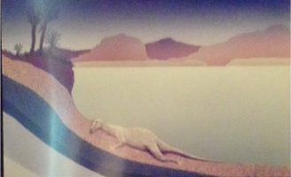
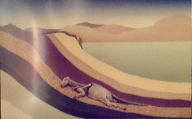
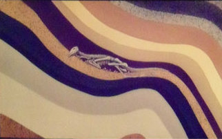
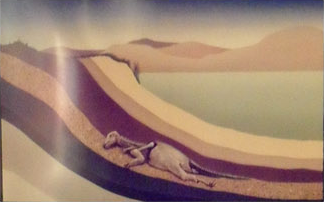

岩石中的紀錄 ( 化石是如何形成呢?)
化石形成的方式有很多種，大都是因沈積作用而形成的，其一般過程如下：
- 生物的遺體被就地掩埋，或被搬運至海、湖或河底等。 
- 遺體被泥沙快速的覆蓋。 
- 柔軟組織被吃掉或被細菌分解腐爛掉，堅硬的部分如果很幸運地沒有被分解或破壞，漸形成化石。 
- 地殼變動時，含有化石的岩層露出地表。 
在這個過程中，泥沙、生物體……等物質，慢慢堆積之後經壓力、溫度等作用，硬化形成岩石，這也就是碎屑沈積岩形成的過程。
自然界中，生物死後通常屍體都會因外力的破壞或細菌的作用而完全分解，身體較堅硬的部分，如骨骼或外殼也是一樣， 只是需要的時間較長，但因此它們也較有機會，因沉積作用或其他因素，形成化石被保存下來。